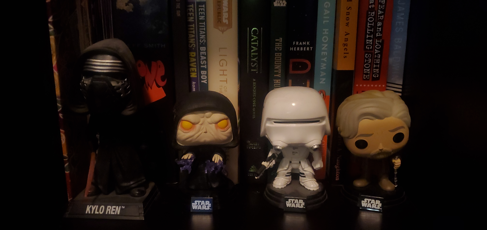
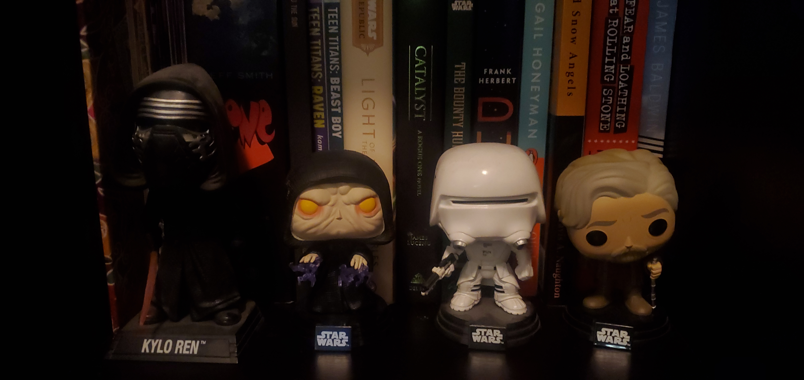
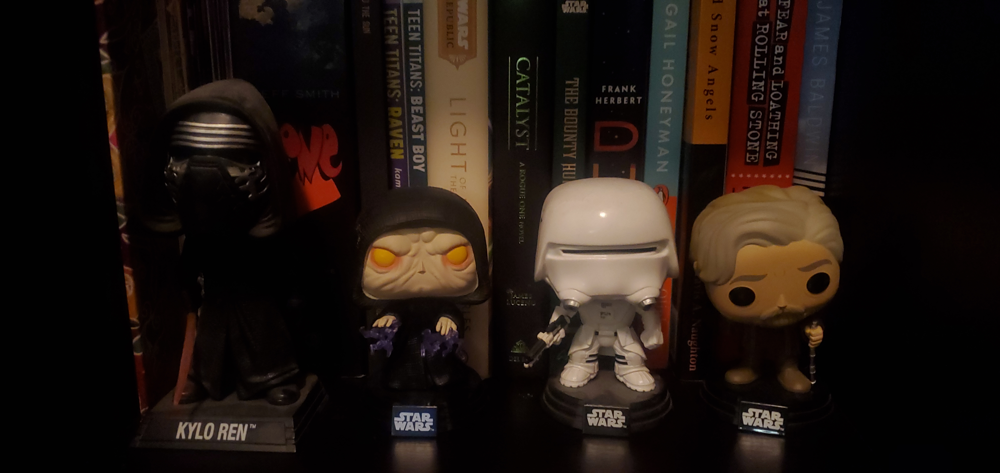

You can reach me with any questions or comments here.
Enjoy some photos of my Star Wars action figures and LEGO's! Believe me, there are a lot more.
 

My name is Alex Naughton. I have been a Star Wars my entire life thanks to my dad. I grew up watching the original and prequel trilogies, playing with Star Wars action figures and LEGO's, reading the comics, dressing up as characters, and playing the video games. Star Wars has deeply imacted the things I enjoy and a lot of my ideas for writing. I have a one-year-old daughter and as soon as she's old enough, I will be passing on the torch to her. I hope you enjoy my little website, and maybe it helped you get aquainted with the vast world of Star Wars.
Enjoy some photos of my Star Wars action figures and LEGO's! Believe me, there are a lot more.
